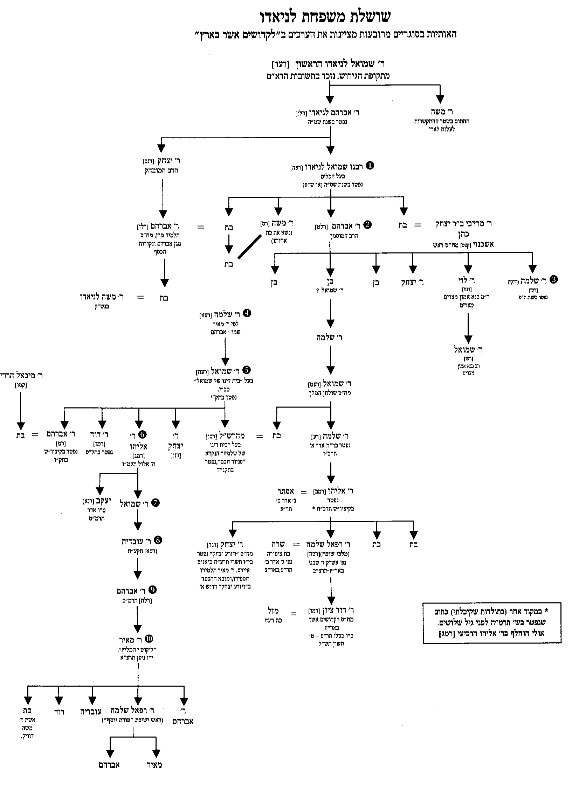

Home / Family Tree
Family Tree
This tree traces the Laniado family from Shmuel Laniado HaRishon, who fled Spain around the 1492 expulsion, down through the eight generations of Chief Rabbis of Aleppo, and onward through the branch that reached the Land of Israel and produced Chacham David Ben Tzion Laniado — whose own children scattered to Israel, Brazil, Italy, and the United States.
Hover over any name for a short summary, or click a highlighted name to open its full profile page. Several relationships in the earliest generations are noted as uncertain in the sources themselves — this tree follows the family's own account in כסא שלמה and לקדושים אשר בארץ.
Tip: this tree is wide — scroll horizontally within the frame above to see every branch.
A Primary Source
The image at right is a genealogical chart from the family's own history, לקדושים אשר בארץ ("To the Holy Ones Who Are in the Land"), compiled by Chacham David Ben Tzion Laniado. It traces the same succession shown in the interactive tree above, in the family's own hand and numbering.
Where this chart and the family's other written records differ slightly on names or generations, this site follows the fuller prose account — noted on each profile page.
